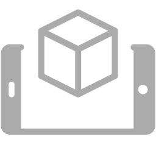

eFinder
下部のアイコンバーにある目のボタン  をクリックすると、Astroidの動作モードがeFinderに切り替わり、ライブスカイ認識が有効になります。eFinderを使用する前に、空が認識されていることを確認してください。空が認識されると、ステータスバーの赤い目アイコン
をクリックすると、Astroidの動作モードがeFinderに切り替わり、ライブスカイ認識が有効になります。eFinderを使用する前に、空が認識されていることを確認してください。空が認識されると、ステータスバーの赤い目アイコン  が緑の目 に変わります。
が緑の目 に変わります。
{kind=link}
重要
スカイ認識モードは提供された5mmレンズでのみ動作することに注意してください。他のレンズを装着してAstroidをカメラとして使用することはできますが、スカイ認識は動作しません。
Sky Recognition
スカイ認識が有効になると、Astroidは空を認識しようとしますが、場合によっては失敗することがあります。5秒以内にスカイ認識のステータスアイコンが緑に変わらない場合は、以下を試してください。
レンズのフォーカスが正しいか確認してください。ぼやけたフォーカスでは、Astroidは星をうまく認識できません。
画像に十分な星が写っているか確認してください。
ゲイン／露出を少し上げるか下げて調整してみてください。画像が明るすぎたり暗すぎたりしてはいけません。露出を上げると反応速度が遅くなることに注意してください。
カメラを雲、月、建物のない方向に向けてください。通常、視界に障害物があると空の認識に時間がかかります。一度認識されたら、ゆっくりとカメラを目的の方向に動かしてください。
Light Pollution
スカイ認識の性能に影響を与える主要な要因の一つは空の状態です。最適な空の状態は、月光のないBortle 6以下の非常に暗い空です。Bortleは夜空の光害の量を見積もる指標です。以下のサイトから簡単にご自身の場所のBortleレベルを確認できます。
https://www.lightpollutionmap.info/
以下の例は、ブリスベン市内周辺の3か所のBortleレベルを示しています。
{kind=link}
動作する場合もありますが、Bortle 6以上の高い光害地域ではスカイ認識の性能が保証されません。Bortle等級の詳細については、次の表を参照してください。
空の状態 |
Bortle クラス |
|---|---|
素晴らしい暗黒空 |
1 |
平均的な暗黒空 |
2 |
田舎の空 |
3 |
田舎／郊外の移行 |
4 |
郊外 |
5 |
明るい郊外 |
6 |
郊外／都市の移行 |
7 |
都市の空 |
8 |
都心の空 |
9 |
Sky Recognition with Moon Light or Light Pollution
月明かりや光害がある環境下では、Bortle 6以下で月明かりのない状態での使用が推奨されますが、どうしてもそのような環境を避けられない場合、限定的な速度と精度でeFinderを動作させる方法があります。
スカイ認識のデフォルト設定は、月明かりのないBortle 5に最適化された露出0.3秒、ゲイン140です。短い露出は応答速度を上げるのに役立ちますが、高いゲイン設定が必要であり、これが光害や月明かりの条件下でノイズの多い画像を引き起こします。ノイズの多い画像はスカイ認識の性能を低下させます。
簡単な解決策は、応答速度を犠牲にして露出を延ばし、ゲインを下げることです。以下の例は、露出とゲインの設定が月明かりの条件下でノイズを低減する方法を示しています。

{kind=link}
Automatic DSO search 
自動DSO検索は、特別な準備なしに自由に夜空を探索したいときに非常に便利です。これを有効にすると、現在のメイン望遠鏡の視界に最も近いDSOを自動的に見つけ、その形状とIDを画面に表示します。
デフォルトでは、この機能はNGCの天体を表示しますが、「Astro Tools Menu」→「Search Setting」で別のカタログを選択できます。また、接眼レンズの視野に応じて、小さすぎたり大きすぎたりする星を見つけたくない場合があります。MinおよびMaxサイズオプションを調整してください。
このオプションをオンにした後、画面に何も表示されない場合は、少しズームインして空の別の部分を移動してみてください。
Geolocation and Time
システム時刻はデバイスの時間に従って自動的に更新されますが、経度と緯度の情報は手動で入力する必要があります。初期設定は0で、上部のステータスアイコン位置に赤いGPSアイコンが表示されます。予測された空を正しく描くために、時間とGPS情報は重要です。
Marker
eFinderモードを有効にすると、すぐに画像上に赤いマークが表示されます。赤い円の中心はメイン望遠鏡が見ている場所です。この機能を初めて望遠鏡で使用する場合、マーカーを移動させて望遠鏡の視界と整列させる必要があるかもしれません。詳細な手順は eFinder Align を参照してください。
Time Adjust
デフォルトでは、プラネタリウムは現在の空を表示します。しかし、タイムバーを調整することで過去や未来の空を描画できます。サポートされる範囲は現在の時間から-10時間から+10時間です。
Star Finder 
AstroidにはNGC、IC、M、HIPの星リストが組み込まれています。Star Finderを使用するには、興味のある星の番号を探して検索バーに入力します。写真やその他の情報も表示されます。
Star Finderリストで星をクリックすると、Astroidはターゲットの位置と、左右および上下方向にどれだけ回転すべきかを度数で表示します。この角度に従ってマウントを調整してください。現在、EQマウントのガイドラインはサポートされていませんが、この機能は将来のアップデートで追加される予定です。
AR Mode 
{kind=link}
デフォルトでは、画面をドラッグすると常にAzAlt方向に動きます。しかし、画面表示をカメラの視界に固定し、世界を動かす方が便利な場合もあります。この機能を有効にするには、設定メニューでCameraViewオプションを有効にしてください。
Click and Find
Astroidの最もユニークな機能の一つは、カメラの画像から星やDSOの情報をクリックして見つけられることです。EAAスタッカーと組み合わせることで、ただリストから星を選ぶだけでなく、視覚的に対話的な方法で夜空を探索できます。
Camera Lock and Unlock 
ユーザーインターフェースはデフォルトでカメラ画像の中心に自動的に追従します。自動カメラ追従モードを解除したい場合は、左側のロックボタン をクリックしてください。
もう一度ボタンをクリックすると、ロックモードに切り替わり、再びカメラを追従します。
Star List 
Star Finderウィンドウの追加ボタン をクリックすると、自分専用の星リストを作成できます。
{kind=link}


追加された星はStar Listウィンドウに表示されます。Star Listウィンドウを開くには をクリックしてください。
また、 アイコンをクリックすると、現在の望遠鏡の近くにあるDSOを自動的に検索してリストに追加できます。
アイコンをクリックすると、現在の望遠鏡の近くにあるDSOを自動的に検索してリストに追加できます。
近くのDSOを検索します。デフォルトではMが使用されますが、Astro Tools MenuでNGCやICに変更できます。
リストの保存と読み込みには、以下のアイコンを使用します。
{kind=link}
{kind=link}